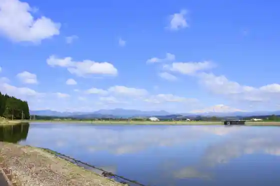
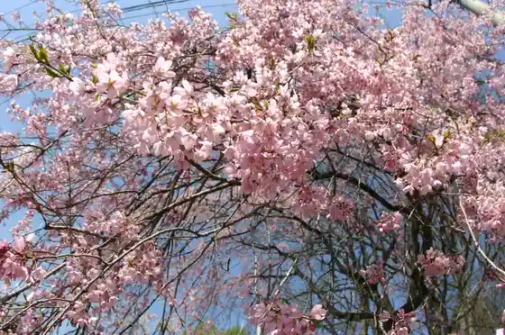
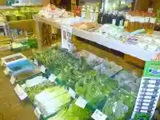
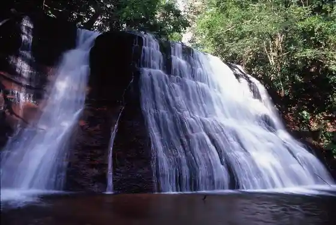

Nono Village Tame Ike
Mamurogawa, Yamagata · 0233-62-2111 · Official / source link

Mamurogawa Park
Mamurogawa, Yamagata · 0233-62-2050 · Official / source link

Mori no Teisha Ba
Mamurogawa, Yamagata · 0233-62-3099 · Official / source link

Fudomyo Falls
Mamurogawa, Yamagata · 0233-62-2111 · Official / source link

Sei Gen Tera
Mamurogawa, Yamagata · 0233-62-2111 · Official / source link
Mamurogawa Sogo Sports Park
Mamurogawa, Yamagata · 0233-62-2305 · Official / source link
Sakenobe Joshi
Mamurogawa, Yamagata · 0233-62-2305 · Official / source link
Keiryu Tsuri / Mamurogawa Ittai
Mamurogawa, Yamagata · 0233-62-2078 · Official / source link
Meisho Numa
Mamurogawa, Yamagata · 0233-62-2111 · Official / source link
Mamurogawa Ritsu Folk History Museum
Mamurogawa, Yamagata · 0233-62-3511 · Official / source link
Taki no Sawa no Ipponsugi
Mamurogawa, Yamagata · 0233-62-2111 · Official / source link
Akiyama Ski Area
Mamurogawa, Yamagata · 0233-62-2223 · Official / source link
Sangaitaki
Mamurogawa, Yamagata · 0233-62-2111 · Official / source link
Mamurogawa Ondo
Mamurogawa, Yamagata · 0233-62-2050 · Official / source link
Onna Koshiki Yama no Dai Katsura
Mamurogawa, Yamagata · 0233-62-2111 · Official / source link
Sanchoku Asahi
Mamurogawa, Yamagata · 0233-63-2083 · Official / source link
Ka Mu Yama
Mamurogawa, Yamagata · 0233-62-2111 · Official / source link
Cho Gaku
Mamurogawa, Yamagata · 0233-62-2111 · Official / source link
Tsuchikura Falls (Takasaka Damu Joryu)
Mamurogawa, Yamagata · 0233-62-2111 · Official / source link